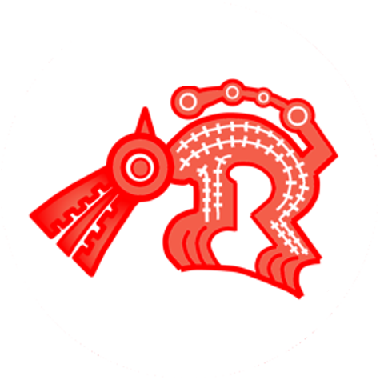

EXPERIENCIA LABORAL
Para poder afianzar lo descrito anteriormente es necesario mostrar unas pocas evidencias de su experiencia laboral de la ingeniera ambiental:
Consultora Ambiente Perú S.A.C.
 Este es uno de los lugares la cual la ingiriera Elizabeth Blas Castillo se integró contribuyendo en gran medida a la empresa Consultora Ambiente Perú S.A.C. Esta empresa comienza en el año 2013, gracias a la iniciativa de ingenieros ambientales. La empresa desde que nació se ha venido dedicando a la elaboración de estudios ambientales, para proyectos de inversión pública y privada, con el fin de contribuir a la gestión ambiental, basado en las políticas ambientales del Perú; y exigencias de las autoridades competentes en los diferentes sectores de gobierno. Tiene como objetivo proveer documentos de Gestión Ambiental, para encaminar el financiamiento y la ejecución de proyectos de inversión pública y privada. Hoy en día se ha consolidado como una empresa seria y responsable. Teniendo todo esto en mente podemos atribuir todos estos principios de la empresa a la ingeniera ambiental Elizabeth, por sus años de servicio en dicha empresa, además por su dedicación y contribución de forma asertiva, adquiriendo diferentes habilidades y cualidades que le servirán para poder compartir en diferentes empresas y proyectos más


Así mismo, trabajó en:
• CONSULTORIAS INDEPENDIENTES.
• MUNICIPALIDAD DISTRITAL DE COMAS -LIMA.
• MUNICIPALIDAD PROVINCIAL DE HUARI – ANCASH.
• MUNICIPALIDAD DISTRITAL DE HUACCHIS – ANCASH.
• AUTORIDAD NACIONAL DE AGUA (ANA) – SEDE CENTRAL.
• CONSULTORA AMBIENTE PERÚ S.A.C.
• INSTITUTO DE INVESTIGACIÓN Y GESTIÓN TERRITORIAL.
• NED ANCASH ROMAS DIT – FONCODES.
• CONSTRUCTORA Y CONSULTORA MARCEVILA S.A.C
• CORPORACIÓN MINERA TOMA LA MANO S.A CORMITOMA (MINA).
• Etc.